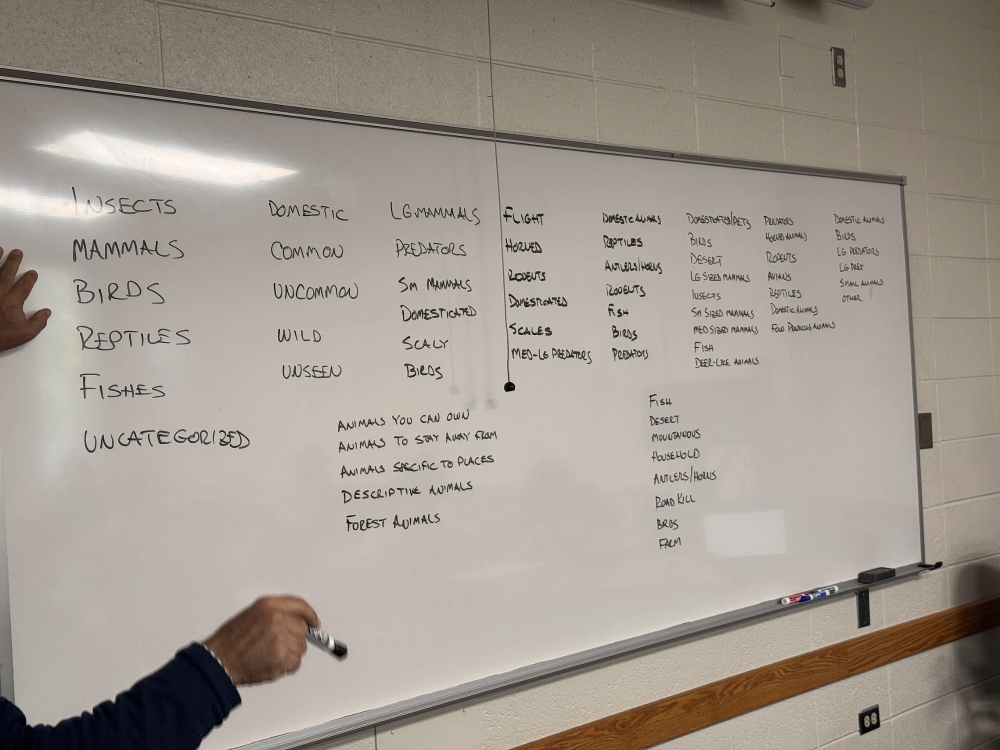
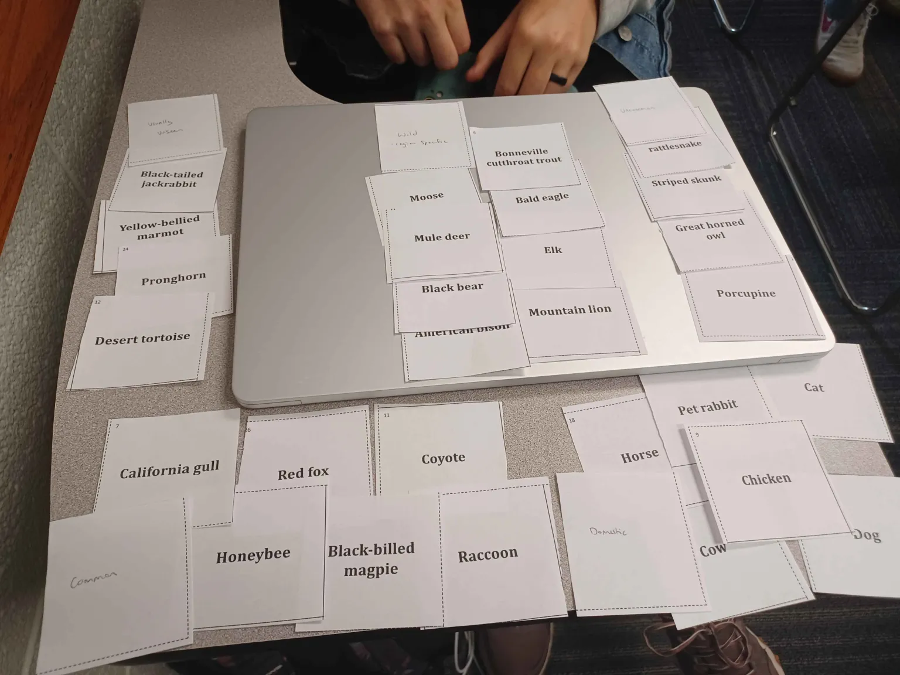
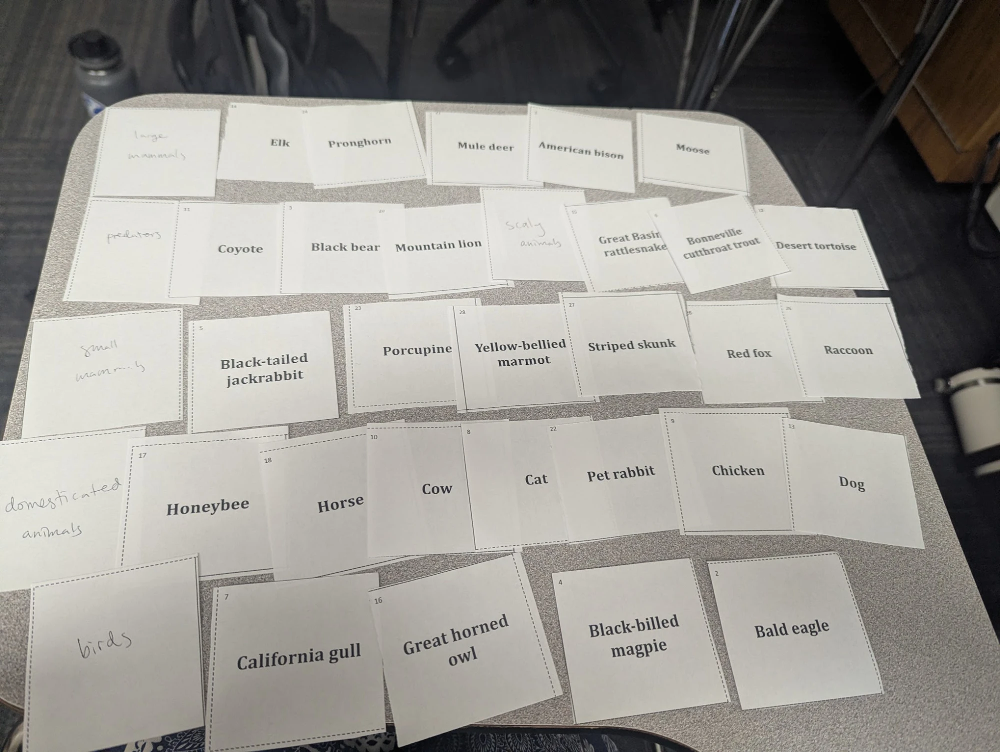
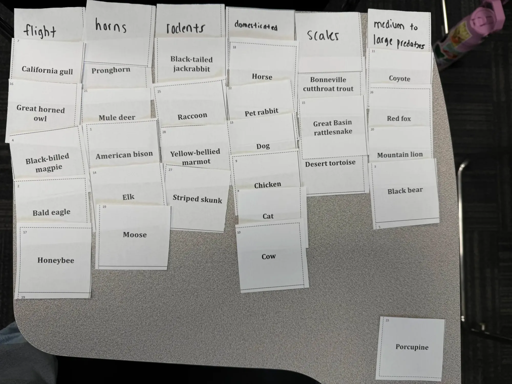
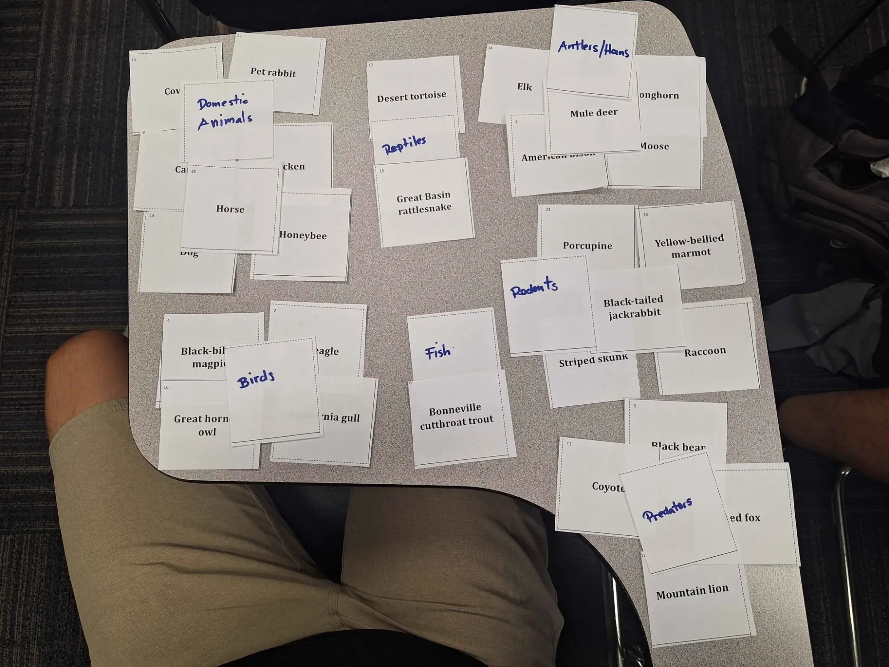
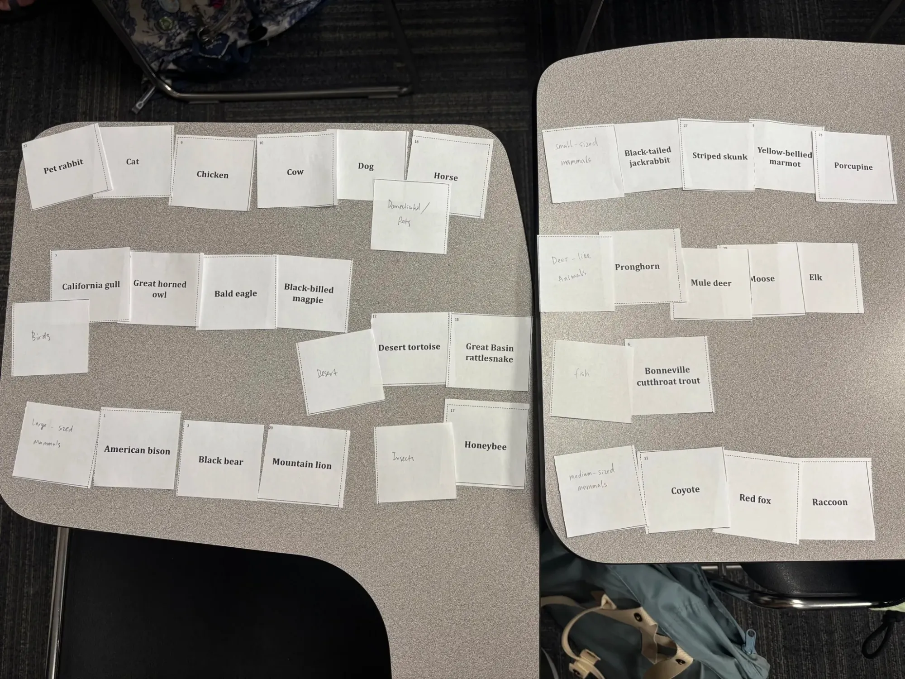
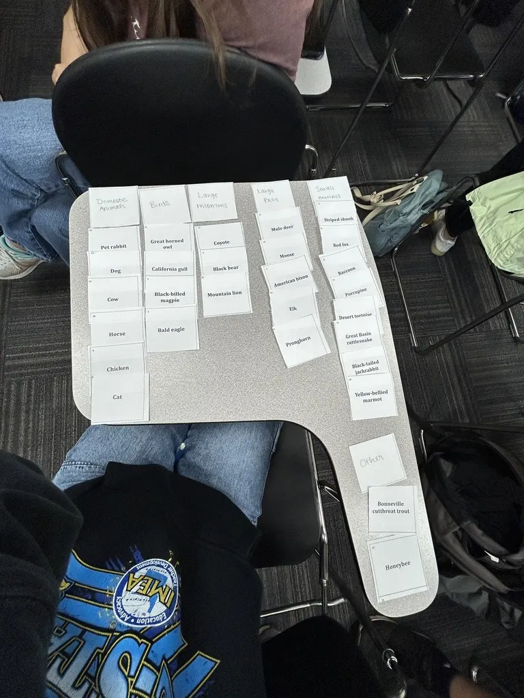

CS 356 Companion · Card sort · A worked analysis of real class data
An in-class card sort, analyzed: animals that live in Utah
In September 2026 the class ran an open card sort in class: 28 cards naming animals that live in Utah, ten groups, one sort each, every label on the whiteboard, six tables photographed. This page analyzes it the way the Canvas method page asks — standardize the names, then find the groups almost everyone made, the strong pairs, and the splitters — and turns the result into an organization, with facets, for a website about Utah’s animals. Then three write-ups of this same sort, graded, so you can see what separates a 60 from a 45 from a 30 when the data is identical.
Five minutes: the TL;DR, then section 5. Before you write your own report: Report A against Report C. The whole method, worked: sections 1–4.
REAL DATA
Nothing on this page is invented. The photographs are the class’s
tables, the labels are what the groups wrote, and every count comes
from the transcription in
animals-card-sort-data.py.
The three sample write-ups are written by the instructor — three
ways this same class could have written it up — and are stamped
where they begin. The photographs show tables, cards, and hands; no
student is identifiable or named.
TL;DR
- Nine of ten groups made a “domestic” pile. The loudest group in the study isn’t a kind of animal at all — it’s the animal’s relationship to people.
- Five clusters never, or almost never, come apart: the six farm animals and pets (together in 6 of 6 photographed sorts); elk, moose, and mule deer (6/6, with pronghorn and bison at 5/6); bear and mountain lion (6/6); the four birds (5/6); jackrabbit and marmot (6/6, with skunk and porcupine at 5/6).
- Six of ten made a predators pile (one called it “animals to stay away from”) — a role, not a kind — and that is why the red fox split 2–2 between predators and small mammals. That split is systematic, not a tie: the fox needs two homes.
- The honeybee (five different homes in six sorts) and the trout (four) are not design problems; they are deck problems — one insect and one fish in a deck of 28.
- Kind of animal is the primary scheme (7 of 10), but “where you meet it” words turn up in 4 of 10 and “how often, or what it does to you” in 3. That is the second categorization a wireframe will need. Size and predator/prey are attributes, not boxes.
So: seven top-level categories in the sorters’ own words, a second way in by place, and four attributes on every animal — section 5.
What we ran
An open sort, no starter categories, physical cards: 28 of them, numbered alphabetically, each naming one animal that lives in Utah. Ten groups of two or three students; each group negotiated one sort and wrote a label for each pile on a blank card. When time was called, every group copied its labels onto the whiteboard in a column, and six of the ten tables were photographed before the cards were picked up.
So the study has two kinds of record, and this page uses two denominators. Label-level findings count all ten sorts (“of 10”) — the whiteboard has every group’s labels. Card-level findings count the six we can see (“of 6”) — strong pairs and splitters need to know which card went where, and for four groups only the whiteboard survives. Keep the two apart and both records are usable; blur them and neither is.
![A classroom whiteboard covered in handwritten labels in ten columns. Large letters at left: Insects, Mammals, Birds, Reptiles, Fishes, Uncategorized. Then columns reading Domestic, Common, Uncommon, Wild, Unseen; Lg mammals, Predators, Sm mammals, Domesticated, Scaly, Birds; Flight, Horned, Rodents, Domesticated, Scales, Med-lg predators; Domestic animals, Reptiles, Antlers/Horns, Rodents, Fish, Birds, Predators; Domesticated/pets, Birds, Desert, Lg sized mammals, Insects, Sm sized mammals, Med sized mammals, Fish, Deer-like animals; Predators, Horned animals, Rodents, Avians, Reptiles, Domestic animals, Food producing animals; Domestic animals, Birds, Lg predators, Lg prey, Small animals, Other. Two lists lower down: Animals you can own, Animals to stay away from, Animals specific to places, Destructive animals, Forest animals; and Fish, Desert, Mountainous, Household, Antlers/Horns, Road kill, Birds, Farm. A hand at the left edge holds a marker.](assets/animals-whiteboard.webp)
The six photographed sorts
Labels are verbatim, with the number of cards in each pile. Appendix A has every pile card by card.

- “Domestic” 6
- “Common” 6
- “Uncommon” 4
- “Wild – region specific” 8
- “Usually unseen” 4
![Photo of Group 3's finished sort on a classroom desk: “large mammals”: Elk, Pronghorn, Mule deer, American bison, Moose; “predators”: Coyote, Black bear, Mountain lion; “scaly animals”: Great Basin rattlesnake, Bonneville cutthroat trout, Desert tortoise; “small mammals”: Black-tailed jackrabbit, Porcupine, Yellow-bellied marmot, Striped skunk, Red fox, Raccoon; “domesticated animals”: Honeybee, Horse, Cow, Cat, Pet rabbit, Chicken, Dog; “birds”: California gull, Great horned owl, Black-billed magpie, Bald eagle.](assets/animals-sort-s3.webp)
- “large mammals” 5
- “predators” 3
- “scaly animals” 3
- “small mammals” 6
- “domesticated animals” 7
- “birds” 4
![Photo of Group 4's finished sort on a classroom desk: “flight”: California gull, Great horned owl, Black-billed magpie, Bald eagle, Honeybee; “horns”: Pronghorn, Mule deer, American bison, Elk, Moose; “rodents”: Black-tailed jackrabbit, Raccoon, Yellow-bellied marmot, Striped skunk; “domesticated”: Horse, Pet rabbit, Dog, Chicken, Cat, Cow; “scales”: Bonneville cutthroat trout, Great Basin rattlesnake, Desert tortoise; “medium to large predators”: Coyote, Red fox, Mountain lion, Black bear; an unlabeled card: Porcupine.](assets/animals-sort-s4.webp)
- “flight” 5
- “horns” 5
- “rodents” 4
- “domesticated” 6
- “scales” 3
- “medium to large predators” 4
- no label 1
![Photo of Group 5's finished sort on a classroom desk: “Domestic Animals”: Cow, Pet rabbit, Cat, Chicken, Horse, Dog, Honeybee; “Reptiles”: Desert tortoise, Great Basin rattlesnake; “Antlers/Horns”: Elk, Pronghorn, Mule deer, American bison, Moose; “Rodents”: Porcupine, Yellow-bellied marmot, Black-tailed jackrabbit, Striped skunk, Raccoon; “Birds”: Black-billed magpie, Bald eagle, Great horned owl, California gull; “Fish”: Bonneville cutthroat trout; “Predators”: Coyote, Black bear, Red fox, Mountain lion.](assets/animals-sort-s5.webp)
- “Domestic Animals” 7
- “Reptiles” 2
- “Antlers/Horns” 5
- “Rodents” 5
- “Birds” 4
- “Fish” 1
- “Predators” 4
![Photo of Group 6's finished sort on a classroom desk: “Domesticated / Pets”: Pet rabbit, Cat, Chicken, Cow, Dog, Horse; “Birds”: California gull, Great horned owl, Bald eagle, Black-billed magpie; “Desert”: Desert tortoise, Great Basin rattlesnake; “large-sized mammals”: American bison, Black bear, Mountain lion; “Insects”: Honeybee; “small-sized mammals”: Black-tailed jackrabbit, Striped skunk, Yellow-bellied marmot, Porcupine; “Deer-like Animals”: Pronghorn, Mule deer, Moose, Elk; “fish”: Bonneville cutthroat trout; “medium-sized mammals”: Coyote, Red fox, Raccoon.](assets/animals-sort-s6.webp)
- “Domesticated / Pets” 6
- “Birds” 4
- “Desert” 2
- “large-sized mammals” 3
- “Insects” 1
- “small-sized mammals” 4
- “Deer-like Animals” 4
- “fish” 1
- “medium-sized mammals” 3
![Photo of Group 8's finished sort on a classroom desk: “Domestic Animals”: Pet rabbit, Dog, Cow, Horse, Chicken, Cat; “Birds”: Great horned owl, California gull, Black-billed magpie, Bald eagle; “Large predators”: Coyote, Black bear, Mountain lion; “Large prey”: Mule deer, Moose, American bison, Elk, Pronghorn; “Small animals”: Striped skunk, Red fox, Raccoon, Porcupine, Desert tortoise, Great Basin rattlesnake, Black-tailed jackrabbit, Yellow-bellied marmot; “Other”: Bonneville cutthroat trout, Honeybee.](assets/animals-sort-s8.webp)
- “Domestic Animals” 6
- “Birds” 4
- “Large predators” 3
- “Large prey” 5
- “Small animals” 8
- “Other” 2
1. Standardize the group names
“Standardize similar group names (‘Getting started’ / ‘Start here’ / ‘Basics’ are one category), then look for: groups almost everyone created, strong card pairs, and splitter cards. … And where sorters split cards systematically — half filing a skill by situation, half by topic — that is not noise and not a tie to break. It is evidence the item needs more than one home.”
The Canvas method page, after Spencer’s book.
Two rules governed the standardizing. Where the photo exists, a pile is standardized by what is in it, not only by the word on it. Group 6’s “Desert” holds exactly the tortoise and the rattlesnake, so it is a reptile pile with a habitat word on it — and the word is kept, because the word is vocabulary evidence. Where only the whiteboard survives, the word is all we have. And labels that name a principle rather than a kind of animal — “Common,” “Road kill,” “Mountainous” — are not forced into a category; they go in a second table, as evidence about schemes.
Table 1 · The 65 labels, standardized
| Standardized group | Sorts | Verbatim labels folded in |
|---|---|---|
| Domestic / farm & pets | 9/10 | “Domestic” (S2); “domesticated animals” (S3); “domesticated” (S4); “Domestic Animals” (S5); “Domesticated / Pets” (S6); “Domestic animals” (S7); “Food producing animals” (S7); “Domestic Animals” (S8); “Animals you can own” (S9); “Household” (S10); “Farm” (S10) |
| Birds | 8/10 | “Birds” (S1); “birds” (S3); “flight” (S4); “Birds” (S5); “Birds” (S6); “Avians” (S7); “Birds” (S8); “Birds” (S10) |
| Deer, elk & other antlered or horned animals | 7/10 | “large mammals” (S3); “horns” (S4); “Antlers/Horns” (S5); “Deer-like Animals” (S6); “Horned animals” (S7); “Large prey” (S8); “Antlers/Horns” (S10) |
| Reptiles (and other scaly things) | 6/10 | “Reptiles” (S1); “scaly animals” (S3); “scales” (S4); “Reptiles” (S5); “Desert” (S6); “Reptiles” (S7) |
| Predators / animals to stay away from | 6/10 | “predators” (S3); “medium to large predators” (S4); “Predators” (S5); “Predators” (S7); “Large predators” (S8); “Animals to stay away from” (S9) |
| Small mammals | 6/10 | “small mammals” (S3); “rodents” (S4); “Rodents” (S5); “small-sized mammals” (S6); “Rodents” (S7); “Small animals” (S8) |
| Fish | 4/10 | “Fishes” (S1); “Fish” (S5); “fish” (S6); “Fish” (S10) |
| Leftovers | 3/10 | “Uncategorized” (S1); “(one card left unlabeled)” (S4); “Other” (S8) |
| Insects | 2/10 | “Insects” (S1); “Insects” (S6) |
| Mammals, undivided | 1/10 | “Mammals” (S1) |
| Mammals by size alone | 1/10 | “large-sized mammals” (S6); “medium-sized mammals” (S6) |
Table 2 · Labels that are a principle, not a group
| Kind of word | Sorts | Verbatim labels |
|---|---|---|
| Where you meet it (habitat / place) | 4/10 | “Wild – region specific” (S2); “Desert” (S6); “Animals specific to places” (S9); “Forest animals” (S9); “Desert” (S10); “Mountainous” (S10); “Household” (S10); “Farm” (S10) |
| How often you meet it, or what it does to you | 3/10 | “Common” (S2); “Uncommon” (S2); “Usually unseen” (S2); “Animals you can own” (S9); “Animals to stay away from” (S9); “Destructive animals” (S9); “Road kill” (S10) |
| Size words in labels | 4/10 | “large mammals” (S3); “small mammals” (S3); “medium to large predators” (S4); “large-sized mammals” (S6); “medium-sized mammals” (S6); “small-sized mammals” (S6); “Large predators” (S8); “Large prey” (S8); “Small animals” (S8) |
| Predator / prey words in labels | 5/10 | “predators” (S3); “medium to large predators” (S4); “Predators” (S5); “Predators” (S7); “Large predators” (S8); “Large prey” (S8) |
| Visible-feature words in labels | 6/10 | “scaly animals” (S3); “flight” (S4); “horns” (S4); “scales” (S4); “Antlers/Horns” (S5); “Deer-like Animals” (S6); “Horned animals” (S7); “Antlers/Horns” (S10) |
Reading the tables
- Domestic is the loudest group in the study — 9 of 10 — under five spellings, and two groups split it further: pets from food animals (S7), household from farm (S10). The one group without it (S1) sorted like a biology class. Notice what that means: the strongest category people reached for describes the animal’s relationship to us, not its biology.
- Birds, 8 of 10. S4 wrote “flight” and put the honeybee in; S7 wrote “Avians,” the only Latinate word among 65 labels.
- The deer group is the most consistently made and the most inconsistently named: seven groups, six different labels. Two wrote “Antlers/Horns” independently; nobody wrote “ungulates” or “hoofed.” And “large mammals” named this group for S3 but a different group (bison, bear, lion) for S6 — one size word, two different piles.
- “Rodents” (3 of 10) is a label that doesn’t mean what it says. Both “rodents” piles we can see (S4, S5) held the jackrabbit (a hare), the raccoon and the skunk (carnivores) — and S4, which wrote “rodents,” left the porcupine, an actual rodent, on the table with no label at all. People say “rodents” for “small furry animals.” “Small mammals” says that without being wrong.
- Reptiles: “Reptiles,” “scaly,” “scales,” “Desert” — three ideas for the same two animals, and twice the trout joined them under a scales word.
- Fish (4 of 10 as its own pile, plus 2 folded into “scaly”) and Insects (2 of 10) can’t show up as groups: the deck has one of each. They show up as splitters instead (section 3).
2. Strong pairs — of the six photographed sorts
Counting every pair of cards that shared a pile, sort by sort: 21 pairs were together in all six photographed sorts and 15 more in five. They form five clusters.
Farm animals & pets 6/6 · all 15 pairs
- Cat
- Dog
- Cow
- Horse
- Chicken
- Pet rabbit
Never once separated, under any scheme.
The deer group 6/6 core
- Elk
- Moose
- Mule deer
- Pronghorn 5/6
- American bison 5/6
Pronghorn left once (S2: “usually unseen”); bison left once (S6 filed it by size, with bear and lion).
Big predators 6/6 core
- Black bear
- Mountain lion
- Coyote 4/6
Coyote joins in the four sorts with a predators pile; S2 called it “common,” S6 “medium-sized.” Red fox joins in two.
Birds 5/6
- Bald eagle
- Great horned owl
- California gull
- Black-billed magpie
Gull + magpie 6/6. Only S2 split the birds — by how often you see them, not by whether they are birds.
Small mammals 6/6 core
- Black-tailed jackrabbit
- Yellow-bellied marmot
- Striped skunk 5/6
- Porcupine 5/6
- Raccoon 4/6
Porcupine + skunk 5/6; raccoon leaves for “common” (S2) and “medium-sized” (S6).
Reptiles 5/6
- Desert tortoise
- Great Basin rattlesnake
- Trout 2/6
Together everywhere but S2 (“uncommon” vs. “usually unseen”). The trout joins under “scales” and “scaly.”
One thing to notice before you count pairs: four of the six 5/6 clusters are S2’s doing. Group 2 sorted by how often you meet the animal, so it split the birds, the reptiles, the pronghorn from the deer, and the skunk from the jackrabbit without disagreeing with anyone about what they are. Among the five sorts that used a kind-of-animal scheme, those four clusters are 5 of 5 (bison and porcupine, the other two, are 4 of 5). A group with a different scheme lowers every pair count in the study; separate the schemes (section 4) before you read the pairs, or you will see disagreement that isn’t there.
3. Splitters — and which splits are systematic
Table 3 shows where each card went in each photographed sort, cell tinted by the standardized group. The last column counts how many different groups a card landed in outside S2 (S2’s frequency scheme is a different kind of answer; it is hatched, and it would make every card look like a splitter). Eleven cards moved; the other seventeen are in Appendix B.
domestic birds deer group reptiles / scaly predators small mammals fish insects by size alone leftover / no label S2’s frequency scheme
Table 3 · The eleven cards that moved
| Card | S2 | S3 | S4 | S5 | S6 | S8 | Different homes, S2 aside |
|---|---|---|---|---|---|---|---|
| Honeybee | Common | domesticated animals | flight | Domestic Animals | Insects | Other | 4 |
| Bonneville cutthroat trout | Wild – region specific | scaly animals | scales | Fish | fish | Other | 3 |
| Red fox | Common | small mammals | medium to large predators | Predators | medium-sized mammals | Small animals | 3 |
| American bison | Wild – region specific | large mammals | horns | Antlers/Horns | large-sized mammals | Large prey | 2 |
| Black bear | Wild – region specific | predators | medium to large predators | Predators | large-sized mammals | Large predators | 2 |
| Coyote | Common | predators | medium to large predators | Predators | medium-sized mammals | Large predators | 2 |
| Desert tortoise | Usually unseen | scaly animals | scales | Reptiles | Desert | Small animals | 2 |
| Great Basin rattlesnake | Uncommon | scaly animals | scales | Reptiles | Desert | Small animals | 2 |
| Mountain lion | Wild – region specific | predators | medium to large predators | Predators | large-sized mammals | Large predators | 2 |
| Porcupine | Uncommon | small mammals | no label | Rodents | small-sized mammals | Small animals | 2 |
| Raccoon | Common | small mammals | rodents | Rodents | medium-sized mammals | Small animals | 2 |
Two different things are happening in this table, and the method page asks you to tell them apart.
- The honeybee and the trout scatter. The honeybee had five different homes in six sorts — common, domesticated, flight, domestic, insects, other — and the trout four. Neither had a companion in the deck: one insect, one fish. Two things are still worth keeping from the scatter. Two groups put the honeybee with the farm animals and a third (S7, on the whiteboard) made a “Food producing animals” pile: in the Beehive State, a honeybee is a kept animal. And two groups put the trout under a scales word with the reptiles: fish and reptiles can sit next to each other.
- The red fox splits, and it splits the same way every time. Two groups filed it by what it is (small mammals), two by what it does (predators), one by its size (with the coyote and the raccoon). That is the method page’s example almost word for word — half by one principle, half by another — and it is not a tie to break. The fox needs two homes (one animal, several views, below).
- The bison, the coyote, and the raccoon split the same way, more quietly: four sorts by kind (the deer group, predators, small mammals), one by size (S6’s large / medium / small mammals). Size is a principle people reach for — four groups used a size word — but only one group used it as the whole scheme, and “large mammals” meant two different piles to two different groups. Size is an attribute, not a box.
- The porcupine is a vocabulary casualty. S4 wrote “rodents” and then couldn’t put the one rodent they had left into it. It sat alone on the table with no label.
- Tortoise and rattlesnake went with the reptiles four times and, once (S8), into “Small animals” with the small mammals — the one kind-scheme sort with no reptile pile at all.
4. Schemes — what organizing principle did people reach for?
kind of animal, pure kind of animal mixed with role or size your experience of the animal labels only (no photo)
Seven of ten built on kind of animal — but only S1 kept it pure. The other six mixed a role word (predators) or a size word into the same level, and every one of them had a domestic pile. Three groups organized by their experience of the animal: how often you meet it (S2), what it does to or for you (S9: animals you can own, stay away from, destructive), where you meet it (S10: desert, mountainous, household, farm — and road kill, which is where a lot of Utahns do meet a mule deer).
The hybrid is the mental model. A pure taxonomy is one group in ten; a pure experience scheme is three; the common case is kind of animal with “domestic” and “predators” sitting alongside as if they were kinds. And the experience words are not confined to the three experience sorts: place words appear in four of ten sorts, size words in four, predator/prey words in five, visible-feature words (flight, horns, scales) in six. Those are the candidate facets.
5. What this says about a website of Utah’s animals
Read as the method page says — patterns, not a vote — here is what we would carry into a wireframe: seven top-level categories in the sorters’ own words, a second categorization by place, and four attributes on every animal. In the Polar Bear book’s terms, the first is a topical scheme with two audience-relative exceptions (domestic, predators), and the rest are facets.
Table 4 · The organization, with its evidence
| Facet | Values | Evidence | Where it shows up |
|---|---|---|---|
| Kind of animal the primary categorization |
Farm animals & pets · Birds · Deer, elk & other antlered animals · Small mammals · Reptiles · Fish · Insects & other small creatures | Six groups made by 6 of 10 or more; every photographed sort made at least four of them; four of the five 6/6 clusters sit inside one of them, and the fifth (bear + lion) is the Predators view below. | Main navigation — one door per category. |
| Where you’d find it the second categorization |
Deserts · Mountains & forests · Rivers, lakes & wetlands · Farms, yards & towns | Place words in 4 of 10 sorts (“Desert” ×2, “Mountainous,” “Forest animals,” “specific to places,” “region specific,” “Household,” “Farm”); half of S10’s scheme. Every animal takes at least one value, so it can carry a whole second view. | A second way in from the home page (“browse by where you are”), and a fact on every animal’s page. |
| Role | Predator · Prey / grazer · (neither) | “Predators” in 5 of 10 sorts, “stay away from” in a sixth, “Large prey” in one. The red fox’s 2–2 split is kind vs. role. | A “Predators” door that is a view over this attribute, not a box — so the fox, the coyote, the bear and the lion are also in their kind, and in a fuller inventory the eagle, the owl, and the rattlesnake join without leaving Birds or Reptiles. |
| Size | Small · Medium · Large | Size words in 4 of 10; the bison, coyote, raccoon, and fox all moved once because of it. But “large mammals” meant two different piles (S3, S6): size can’t be a category by itself. | A filter chip and a fact on the page. Never a top-level box. |
| Visible feature | Antlers or horns · Scales · Flies · Fur · Feathers | Feature words in 6 of 10 sorts; S4’s whole scheme (flight, horns, scales). This is how someone who just saw something describes it. | “What did you see?” identification entry; search terms. |
| How likely you are to meet one | Kept · Common · Uncommon · Rarely seen | S2’s entire scheme; “Animals you can own” (S9); “Road kill” (S10). One full scheme in ten. | Held. Recorded as a candidate, not built — one group is a signal to test, not a finding to ship. |
One animal, several views
This is why a systematic split isn’t a tie to break. If every animal is one record carrying these attributes, the fox is filed once and found four ways — the single source, multiple views idea the wireframe assignment is built on.
Red fox
- kindSmall mammals
- rolePredator
- sizeMedium
- whereMountains & forests; Farms, yards & towns
- featureFur
- Small mammals S3, S8 filed it here — by kind
- Predators S4, S5 filed it here — by role
- Farms, yards & towns S2 called it “common”; a place view says why
- Medium-sized animals S6 filed it here — by size, with coyote and raccoon
Table 5 · The labels, each with its evidence
| Label | Why this wording |
|---|---|
| Farm animals & pets | “Domestic” in five spellings (9 of 10), but two groups split pets from farm/food animals (S7, S10); a label that names both keeps their distinction visible. Nobody outside a biology context says “domesticated.” |
| Birds | 8 of 10 wrote it. Not “Avians” (one group), not “Flight” (one group, and it swallowed the honeybee). |
| Deer, elk & other antlered animals | Seven groups, six labels. “Antlers/Horns” was written twice, independently — the strongest verbatim signal — and “Deer-like animals” is the most transparent. “Large mammals” (S3) is ambiguous (S6 used it for bear and lion); “Large prey” (S8) is a hunter’s frame. Naming the two most familiar animals plus the feature covers pronghorn and bison without a taxonomy word. |
| Small mammals | “Rodents” (3), “small mammals” (2), “small animals” (1) — the same five animals behind all six. We take the label that is true of the pile: the jackrabbit, raccoon, and skunk are not rodents, and “rodents” orphaned the porcupine on S4’s table. |
| Reptiles | “Reptiles” ×4, “scaly / scales” ×2, “Desert” ×1 (by contents). The scales word is why Fish sits next door. |
| Predators | Five groups wrote it. S9’s “Animals to stay away from” is the safety reading of the same pile; for a hiking audience, “Animals to watch out for” is worth testing. Built as a view over the role attribute (Table 4). |
| Fish · Insects & other small creatures | Weak in this sort (4 of 10 and 2 of 10) because the deck held one of each. In a real inventory of Utah’s animals both are large; the deck, not the users, made them small. The honeybee also carries the “kept” reading three groups gave it. |
Two caveats we would write into the report
- The sorters were CS students standing in for a general Utah audience. A school audience would pull toward S1’s taxonomy (one group in ten here); a hiking or driving audience toward S9’s and S10’s experience words. The categories above are a reading of these ten sorts, and the audience question is the first thing the real project would settle.
- The deck taught us about the deck. One fish, one insect, no amphibians, and three of ten groups needed a leftover pile — always for the honeybee, the trout, or the porcupine. A content inventory that sampled Utah’s animals evenly would make Fish and Insects proper groups and make the splitter list shorter.
Three write-ups of this sort, graded
Below, the same data written up three ways — the five elements the assignment asks for, graded on the 60-point Study Report Rubric (Methods 15 / Results & Analysis 20 / Design Decisions 25). The white pages are the report; everything in red is the grader.
What is not being graded here: the number of sorts. All three write-ups describe the same in-class protocol — ten sorts, six photographed — so Methods is scored the same for each (15/15) and never separates them. The whole spread, 60 to 45 to 30, comes from Results & Analysis and Design Decisions: from the reading and the deciding, not the running.
In your real study the count is graded. The rubric’s Developing band is “recruited more than half of the required participants, but not all,” and Beginning is “half or fewer” — too few sorts costs Methods points before a word of analysis is read.
What to watch for as you read
Report A — 60/60
Written in the voice of a strong CS undergraduate: plain, numbers-forward, and honest about its two denominators. It is sections 1–5 of this page fitted to the assignment’s limits — a page of analysis, a page of decisions, half a page of what’s ignored — and the fitting is part of the skill: notice what survived.
Open Card Sort — Animals That Live in Utah
CS 356 · Turn-in 1 · September 2026
1. Who sorted
Ten groups of two or three students from CS 356 sorted the same 28 cards in class, one sort per group, in about fifteen minutes. The sorts are numbered by their column on the whiteboard.
| Sort | Group | What we have | Piles | Their scheme, as we read it |
|---|---|---|---|---|
| S1 | Group 1 | whiteboard only | 6 | biology-class taxonomy |
| S2 | Group 2 | photo + whiteboard | 5 | how often you meet it |
| S3 | Group 3 | photo + whiteboard | 6 | kind of animal, mammals split by size and role |
| S4 | Group 4 | photo + whiteboard | 7 | visible features (flight, horns, scales), plus role |
| S5 | Group 5 | photo + whiteboard | 7 | kind of animal, plus role |
| S6 | Group 6 | photo + whiteboard | 9 | kind of animal, mammals split three ways by size |
| S7 | Group 7 | whiteboard only | 7 | kind of animal, plus role; pets split from food animals |
| S8 | Group 8 | photo + whiteboard | 6 | kind of animal, mammals split by size and predator/prey |
| S9 | Group 9 | whiteboard only | 5 | your relationship to the animal |
| S10 | Group 10 | whiteboard only | 8 | where you meet it, mixed with kind |
Method: open sort, physical cards, no starter categories. Each group grouped the cards however it wanted and wrote a label for each pile on a blank card; when time was called, every group copied its labels onto the whiteboard, and we photographed six of the tables before the cards were picked up. Labels are transcribed exactly as written.
Three things to flag. First, four sorts (S1, S7, S9, S10) survive only as labels, so this report uses two denominators and says which one every time: label-level counts are of 10, card-level counts (pairs, splitters) are of 6. Second, we did not record how many people were in each group — two or three — and should have. Third, the sorters are CS students, not the audience of a Utah-animals site; we treat them as stand-ins for a general Utah audience and say in section 4 where that matters.
2. Pictures of the sorts
The whiteboard (every group’s labels), then the six photographed tables. Labels in the captions are verbatim; Appendix A lists every pile card by card.

- “Domestic” 6
- “Common” 6
- “Uncommon” 4
- “Wild – region specific” 8
- “Usually unseen” 4
- “large mammals” 5
- “predators” 3
- “scaly animals” 3
- “small mammals” 6
- “domesticated animals” 7
- “birds” 4
- “flight” 5
- “horns” 5
- “rodents” 4
- “domesticated” 6
- “scales” 3
- “medium to large predators” 4
- no label 1
- “Domestic Animals” 7
- “Reptiles” 2
- “Antlers/Horns” 5
- “Rodents” 5
- “Birds” 4
- “Fish” 1
- “Predators” 4
- “Domesticated / Pets” 6
- “Birds” 4
- “Desert” 2
- “large-sized mammals” 3
- “Insects” 1
- “small-sized mammals” 4
- “Deer-like Animals” 4
- “fish” 1
- “medium-sized mammals” 3
- “Domestic Animals” 6
- “Birds” 4
- “Large predators” 3
- “Large prey” 5
- “Small animals” 8
- “Other” 2
3. Analysis: trends and isolated incidents
Trends
1. The loudest group is a relationship, not a kind. After standardizing the 65 labels, nine of ten sorts had a domestic pile (five spellings; two groups split pets from farm or food animals). The only group without one sorted like a biology class.
2. Six groups clear 6 of 10. Domestic 9, birds 8, the deer group 7 (six different labels for the same five animals), reptiles 6, predators 6, small mammals 6. Fish (4) and insects (2) can’t form groups in a deck with one of each.
3. Strong pairs (of 6). 21 pairs together in all six photographed sorts, 15 more in five: the six domestic animals (all 15 pairs, 6/6); elk + moose + mule deer (6/6; pronghorn and bison 5/6); bear + mountain lion (6/6; coyote 4/6); the four birds (5/6); jackrabbit + marmot (6/6; skunk and porcupine 5/6); tortoise + rattlesnake (5/6). Four of the six 5/6 clusters are S2’s frequency scheme splitting kinds without disagreeing about them; among the five kind-scheme sorts they are 5 of 5.
4. Two kinds of splitter. The honeybee (five homes in six sorts) and the trout (four) scatter because they have no companions in the deck. The red fox splits systematically: 2 sorts by kind (small mammals), 2 by role (predators), 1 by size. Bison, coyote, and raccoon show the same kind-vs-size split, 4 to 1. Per the method page, the fox’s split is evidence for a second home, not a tie.
5. Schemes. Seven of ten sorted by kind of animal, but only one purely; the rest mixed in predators or size. Three sorted by their experience of the animal (how often you meet it; what it does to you; where it lives). Place words appear in four sorts, size words in four, predator/prey words in five, visible features (flight, horns, scales) in six.
Isolated incidents
- S4 wrote “rodents,” filled it with a hare, a raccoon, and a skunk, and left the porcupine — the rodent — unlabeled on the table.
- S7 split “Food producing animals” from “Domestic animals”; S10 split “Farm” from “Household.” Two of ten, noted.
- “Road kill” (S10) and “Destructive animals” (S9): one group each, but both are real Utah experiences of these animals.
- “Avians” (S7): the only Latinate label of 65.
4. Categories and labels
Seven categories in the sorters’ words, a second way in by place, and attributes on every animal. Each row says which result it comes from.
| Decision | Because |
|---|---|
| Farm animals & pets | 9 of 10 made it; S7 and S10 split pets from farm, so the label names both. |
| Birds | 8 of 10; the four birds 5/6 (gull + magpie 6/6). |
| Deer, elk & other antlered animals | 7 of 10 under six labels; “Antlers/Horns” written twice independently; elk + moose + mule deer 6/6, pronghorn and bison 5/6. Not “large mammals” — S3 and S6 meant different piles by it. |
| Small mammals | 6 of 10; jackrabbit + marmot 6/6, skunk and porcupine 5/6. Not “Rodents” (3 groups) — their piles weren’t rodents, and the word orphaned S4’s porcupine. |
| Reptiles; Fish next to it | Reptiles 6 of 10, tortoise + rattlesnake 5/6; the trout joined them under “scales” in 2 of 6, so Fish sits adjacent. |
| Insects & other small creatures | 2 of 10 — a one-card category in this deck; kept because a real inventory will fill it, and the honeybee also gets the “kept” attribute three groups gave it. |
| Predators — a view, not a box | 6 of 10 made it, and the red fox split 2–2 between it and small mammals. Because that split is systematic, the fox is filed under Small mammals with role = predator, and the Predators page lists every animal with that role. Bear, lion, and coyote (4/6 together) appear there and in their kind. |
| Second categorization: where you’d find it (deserts / mountains & forests / rivers & lakes / farms, yards & towns) | Place words in 4 of 10 sorts and half of S10’s scheme; every animal takes at least one value, so it can carry a whole second view. |
| Attributes: size, visible feature | Size words in 4 of 10, and every kind-vs-size split above; feature words in 6 of 10 (S4’s whole scheme). Filters and page facts, never top-level boxes — “large mammals” already proved ambiguous. |
Audience. These labels read the sorters as a general Utah audience. For a school audience we would expect S1’s taxonomy to strengthen; for hikers, S9’s “Animals to stay away from” may be the better name for Predators. Neither is decided by ten sorts of CS students.
5. What we’re ignoring — for now
- S2’s frequency scheme (common / uncommon / usually unseen). One full scheme in ten, plus “Road kill.” Recorded as a candidate attribute; if a tree test shows people looking for “what am I likely to see,” we build it.
- “Destructive animals” (S9). One group, and we don’t know which cards.
- Size as a category. Four groups used the words, but one used them for the whole scheme, and “large mammals” meant two different things. Attribute only.
- S1’s pure taxonomy. One group. It would be the first thing to revisit for a school audience.
- The four label-only sorts’ card placements. We don’t have them and won’t guess; they count for labels and schemes only.
Report A scorecard
| Methods | Full Marks | 15 |
| Results & Analysis | Full Marks | 20 |
| Design Decisions | Full Marks | 25 |
| Total | 60/60 |
Report B — 45/60
A competent team that did the counting and then stopped one step early, twice.
Card Sort Report: Utah Animals Website
CS 356 — Team B
1. Participants
Our class did the card sort in 10 groups of 2–3 people with 28 cards of animals that live in Utah. It took about 15 minutes. It was an open sort, so groups made up their own categories and wrote them on cards. We took pictures of 6 of the tables, and everyone wrote their categories on the whiteboard, so we have the categories for all 10 groups.
2. Pictures
The whiteboard has all 10 groups’ categories. Here are the 6 tables we photographed.






3. Analysis
Most groups (7 out of 10) sorted by the type of animal, so type of animal is the winning scheme. After combining similar names, the most common categories were domestic animals (9 groups), birds (8), deer/horned animals (7), reptiles (6), predators (6), and small mammals/rodents (6). Group 2 did common/uncommon/unseen, which was kind of an outlier, and Groups 9 and 10 had some random ones like “road kill” and “destructive animals.”
A few cards were hard for people to place. The honeybee went all over the place (bird, insect, domestic, other). The trout was sometimes with the reptiles and sometimes its own fish category. The red fox was 50/50 between predators and small mammals.
Nobody really thought about habitat except Group 6’s “desert” category, so habitat doesn’t seem important to people.
4. Categories
Based on the results we chose seven categories: Domestic Animals, Birds, Big Game, Predators, Rodents, Reptiles, and Other (the fish and the honeybee). These are the categories most groups used. For the red fox we went with Predators since it hunts and two groups put it there. We might add a filter for animal size later since a couple of groups used size.
5. What we ignored
We ignored Group 2’s common/uncommon categories since only one group did that. We also mostly ignored the four groups we didn’t have photos of, since we couldn’t see which cards they put where.
Report B scorecard
| Methods | Full Marks — the class protocol, accurately reported | 15 |
| Results & Analysis | Developing — real counts, then an over-claim (capped); raw data incomplete | 13 |
| Design Decisions | Developing — connections implicit; one uncited label, a tie broken by coin, one vague filter | 17 |
| Total | 45/60 |
Report C — 30/60
An earnest team that recorded the whiteboard and decided before it read.
Card Sort
CS 356
1. Participants
For the card sort our whole class participated in groups. There were 28 cards with animals from Utah on them and I think about 10 groups. Everyone sorted them however they wanted and then wrote their categories on the board.
2. Photos
Here are some pictures of the sorts (the clearest ones) and the whiteboard, which has everyone’s categories on it.
3. Analysis
Group 1 did insects, mammals, birds, reptiles, fish, and uncategorized. Group 2 did domestic, common, uncommon, wild, and unseen. Group 3 did large mammals, predators, small mammals, domesticated, scaly, and birds. Group 4 did flight, horned, rodents, domesticated, scales, and predators. Group 5 did domestic animals, reptiles, antlers/horns, rodents, fish, birds, and predators. Group 6 did domesticated/pets, birds, desert, large mammals, insects, small mammals, medium mammals, fish, and deer-like animals. Group 7 did predators, horned animals, rodents, avians, reptiles, domestic animals, and food producing animals. Group 8 did domestic animals, birds, large predators, large prey, small animals, and other. Group 9 did animals you can own, animals to stay away from, animals specific to places, destructive animals, and forest animals. Group 10 did fish, desert, mountainous, household, antlers/horns, road kill, birds, and farm.
Overall most groups basically sorted by what type of animal it is, like you would in a science class. Some groups did more random ones like road kill.
4. Categories
We decided to organize the website by animal type: Mammals, Birds, Reptiles, Amphibians, Fish, and Insects. This is the scientific way to do it and it’s basically what most groups did. We might also do a page for Utah’s state animals.
5. What we are ignoring
Nothing really, the results were about what we expected.
Report C scorecard
| Methods | Full Marks — the class protocol (thinly reported) | 15 |
| Results & Analysis | Beginning — a transcription and one sentence; raw data missing | 7 |
| Design Decisions | Beginning — a textbook plan that contradicts the data | 8 |
| Total | 30/60 |
What separates 60 from 45 from 30
Same 28 cards, same ten sorts, same photographs. Report C decided before it read: the plan is a biology textbook’s, and the loudest thing in the data — nine domestic piles — has nowhere to live in it. Report B read, mostly, and then did two things the method page warns against: it treated the sort as a vote (seven of ten sorted by kind, so kind wins and the rest is “random”), and it broke a systematic split with a coin (“it hunts”). It also threw away four sorts because it couldn’t see their cards, and those four held the second categorization. Report A’s difference isn’t effort; it’s three habits. Keep two denominators and say which one you’re using. Read disagreement before you average it — scatter and split are different findings. And write every decision as “because [count], we will [decision],” including the decisions to hold something and to give one animal two homes. The rubric’s weighting says the same thing: 15 points for running the study, 45 for what you make of it.
Appendix A: the raw data
REAL DATA Every photographed sort, pile by pile, labels verbatim; then the four sorts that survive only as whiteboard labels. Card numbers are the numbers printed on the cards (alphabetical, 1–28). This is the transcription every count on the page is computed from.
S2 Group 2 how often you meet it
“Domestic”
- 18 Horse
- 22 Pet rabbit
- 08 Cat
- 09 Chicken
- 10 Cow
- 13 Dog
“Common”
- 07 California gull
- 26 Red fox
- 11 Coyote
- 17 Honeybee
- 04 Black-billed magpie
- 25 Raccoon
“Uncommon”
- 15 Great Basin rattlesnake
- 27 Striped skunk
- 16 Great horned owl
- 23 Porcupine
“Wild – region specific”
- 19 Moose
- 21 Mule deer
- 03 Black bear
- 01 American bison
- 06 Bonneville cutthroat trout
- 02 Bald eagle
- 14 Elk
- 20 Mountain lion
“Usually unseen”
- 05 Black-tailed jackrabbit
- 28 Yellow-bellied marmot
- 24 Pronghorn
- 12 Desert tortoise
S3 Group 3 kind of animal, mammals split by size and role
“large mammals”
- 14 Elk
- 24 Pronghorn
- 21 Mule deer
- 01 American bison
- 19 Moose
“predators”
- 11 Coyote
- 03 Black bear
- 20 Mountain lion
“scaly animals”
- 15 Great Basin rattlesnake
- 06 Bonneville cutthroat trout
- 12 Desert tortoise
“small mammals”
- 05 Black-tailed jackrabbit
- 23 Porcupine
- 28 Yellow-bellied marmot
- 27 Striped skunk
- 26 Red fox
- 25 Raccoon
“domesticated animals”
- 17 Honeybee
- 18 Horse
- 10 Cow
- 08 Cat
- 22 Pet rabbit
- 09 Chicken
- 13 Dog
“birds”
- 07 California gull
- 16 Great horned owl
- 04 Black-billed magpie
- 02 Bald eagle
S4 Group 4 visible features (flight, horns, scales), plus role
“flight”
- 07 California gull
- 16 Great horned owl
- 04 Black-billed magpie
- 02 Bald eagle
- 17 Honeybee
“horns”
- 24 Pronghorn
- 21 Mule deer
- 01 American bison
- 14 Elk
- 19 Moose
“rodents”
- 05 Black-tailed jackrabbit
- 25 Raccoon
- 28 Yellow-bellied marmot
- 27 Striped skunk
“domesticated”
- 18 Horse
- 22 Pet rabbit
- 13 Dog
- 09 Chicken
- 08 Cat
- 10 Cow
“scales”
- 06 Bonneville cutthroat trout
- 15 Great Basin rattlesnake
- 12 Desert tortoise
“medium to large predators”
- 11 Coyote
- 26 Red fox
- 20 Mountain lion
- 03 Black bear
(no label)
- 23 Porcupine
S5 Group 5 kind of animal, plus role
“Domestic Animals”
- 10 Cow
- 22 Pet rabbit
- 08 Cat
- 09 Chicken
- 18 Horse
- 13 Dog
- 17 Honeybee
“Reptiles”
- 12 Desert tortoise
- 15 Great Basin rattlesnake
“Antlers/Horns”
- 14 Elk
- 24 Pronghorn
- 21 Mule deer
- 01 American bison
- 19 Moose
“Rodents”
- 23 Porcupine
- 28 Yellow-bellied marmot
- 05 Black-tailed jackrabbit
- 27 Striped skunk
- 25 Raccoon
“Birds”
- 04 Black-billed magpie
- 02 Bald eagle
- 16 Great horned owl
- 07 California gull
“Fish”
- 06 Bonneville cutthroat trout
“Predators”
- 11 Coyote
- 03 Black bear
- 26 Red fox
- 20 Mountain lion
S6 Group 6 kind of animal, mammals split three ways by size
“Domesticated / Pets”
- 22 Pet rabbit
- 08 Cat
- 09 Chicken
- 10 Cow
- 13 Dog
- 18 Horse
“Birds”
- 07 California gull
- 16 Great horned owl
- 02 Bald eagle
- 04 Black-billed magpie
“Desert”
- 12 Desert tortoise
- 15 Great Basin rattlesnake
“large-sized mammals”
- 01 American bison
- 03 Black bear
- 20 Mountain lion
“Insects”
- 17 Honeybee
“small-sized mammals”
- 05 Black-tailed jackrabbit
- 27 Striped skunk
- 28 Yellow-bellied marmot
- 23 Porcupine
“Deer-like Animals”
- 24 Pronghorn
- 21 Mule deer
- 19 Moose
- 14 Elk
“fish”
- 06 Bonneville cutthroat trout
“medium-sized mammals”
- 11 Coyote
- 26 Red fox
- 25 Raccoon
S8 Group 8 kind of animal, mammals split by size and predator/prey
“Domestic Animals”
- 22 Pet rabbit
- 13 Dog
- 10 Cow
- 18 Horse
- 09 Chicken
- 08 Cat
“Birds”
- 16 Great horned owl
- 07 California gull
- 04 Black-billed magpie
- 02 Bald eagle
“Large predators”
- 11 Coyote
- 03 Black bear
- 20 Mountain lion
“Large prey”
- 21 Mule deer
- 19 Moose
- 01 American bison
- 14 Elk
- 24 Pronghorn
“Small animals”
- 27 Striped skunk
- 26 Red fox
- 25 Raccoon
- 23 Porcupine
- 12 Desert tortoise
- 15 Great Basin rattlesnake
- 05 Black-tailed jackrabbit
- 28 Yellow-bellied marmot
“Other”
- 06 Bonneville cutthroat trout
- 17 Honeybee
S1 Group 1 biology-class taxonomy · labels only, from the whiteboard
“Insects” · “Mammals” · “Birds” · “Reptiles” · “Fishes” · “Uncategorized”
S7 Group 7 kind of animal, plus role; pets split from food animals · labels only, from the whiteboard
“Predators” · “Horned animals” · “Rodents” · “Avians” · “Reptiles” · “Domestic animals” · “Food producing animals”
S9 Group 9 your relationship to the animal · labels only, from the whiteboard
“Animals you can own” · “Animals to stay away from” · “Animals specific to places” · “Destructive animals” · “Forest animals”
S10 Group 10 where you meet it, mixed with kind · labels only, from the whiteboard
“Fish” · “Desert” · “Mountainous” · “Household” · “Antlers/Horns” · “Road kill” · “Birds” · “Farm”
Appendix B: every card’s home in every photographed sort
The seventeen cards that never moved outside S2 (the eleven that did
are in Table 3). The co-occurrence matrix behind section 2 and every
number above come from
animals-card-sort-data.py;
run it to re-derive them.
| Card | S2 | S3 | S4 | S5 | S6 | S8 | Different homes, S2 aside |
|---|---|---|---|---|---|---|---|
| Bald eagle | Wild – region specific | birds | flight | Birds | Birds | Birds | 1 |
| Black-billed magpie | Common | birds | flight | Birds | Birds | Birds | 1 |
| Black-tailed jackrabbit | Usually unseen | small mammals | rodents | Rodents | small-sized mammals | Small animals | 1 |
| California gull | Common | birds | flight | Birds | Birds | Birds | 1 |
| Elk | Wild – region specific | large mammals | horns | Antlers/Horns | Deer-like Animals | Large prey | 1 |
| Great horned owl | Uncommon | birds | flight | Birds | Birds | Birds | 1 |
| Moose | Wild – region specific | large mammals | horns | Antlers/Horns | Deer-like Animals | Large prey | 1 |
| Mule deer | Wild – region specific | large mammals | horns | Antlers/Horns | Deer-like Animals | Large prey | 1 |
| Pronghorn | Usually unseen | large mammals | horns | Antlers/Horns | Deer-like Animals | Large prey | 1 |
| Striped skunk | Uncommon | small mammals | rodents | Rodents | small-sized mammals | Small animals | 1 |
| Yellow-bellied marmot | Usually unseen | small mammals | rodents | Rodents | small-sized mammals | Small animals | 1 |
| Cat | Domestic | domesticated animals | domesticated | Domestic Animals | Domesticated / Pets | Domestic Animals | 1 |
| Chicken | Domestic | domesticated animals | domesticated | Domestic Animals | Domesticated / Pets | Domestic Animals | 1 |
| Cow | Domestic | domesticated animals | domesticated | Domestic Animals | Domesticated / Pets | Domestic Animals | 1 |
| Dog | Domestic | domesticated animals | domesticated | Domestic Animals | Domesticated / Pets | Domestic Animals | 1 |
| Horse | Domestic | domesticated animals | domesticated | Domestic Animals | Domesticated / Pets | Domestic Animals | 1 |
| Pet rabbit | Domestic | domesticated animals | domesticated | Domestic Animals | Domesticated / Pets | Domestic Animals | 1 |
Works cited
- CS 356, Card Sorting. The course’s method page on Canvas, 2026. Cited as “the Canvas method page.” The analysis steps this page follows, and the assignment’s five elements.
- Donna Spencer. Card Sorting: Designing Usable Categories. Rosenfeld Media, 2009. Cited as “Spencer’s book.” Standardizing group names, eyeballing small studies, and reading the sort for patterns rather than averages.
- Donna Spencer and Todd Warfel. Card sorting: a definitive guide. Boxes and Arrows, 2004. The free article version of the method, including the analysis spreadsheet.
- Louis Rosenfeld, Peter Morville, and Jorge Arango. Information Architecture: For the Web and Beyond, 4th ed. O’Reilly, 2015. Cited as “the Polar Bear book.” Organization schemes (exact, topical, task, audience) and faceted classification.